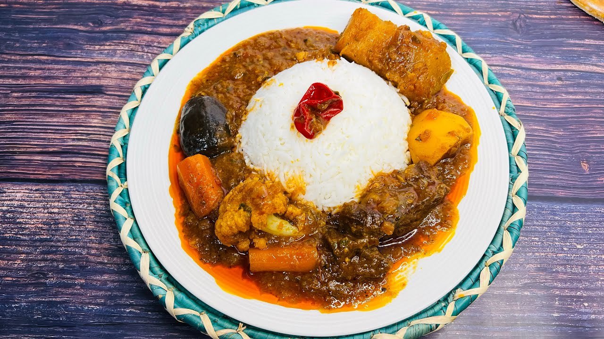

Djabadji

Description
A well-known dish of West Africa
Ingredients
- Meat
- Eggplant
- Two pieces of cabbage
- Tomato concentrate
- onion
- Carrot
- Spices:Paprika, salt, bonnet pepper, curry, cumin, all purpose,crawfish
powder, parsley, garlic, 2 dried bay leaves
- White rice
Steps
- Blend diced onion, parsley, garlic, bonnet pepper:it's our Nokoss
- Peel the eggplant
- Shred the eggplant
- Cut one piece of cabbage
- Fry a little the meat with a little oil, some salt and pepper during 5 minutes
- Add half of the Nokoss to the meat
- Cook 5 mn
- Add the tomato concentrate
- Add 1/2 glass of water, mix well and wait for the oil to come up
- Press the eggplant to remove the excess water and add to the sauce
- Add all the cabbage
- Fry until the oil come up
- Add 1 to 2L of water and the remaining of the Nokoss to the sauce
- Add the carrot and the spices
- Mix well, cover and let boil until the meat is soften
- Prepare the rice:boil the rice until it's softened